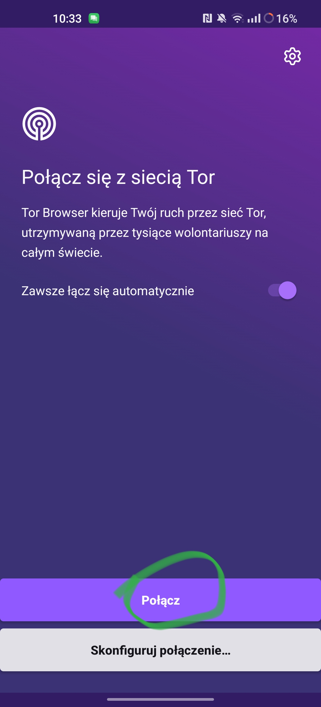
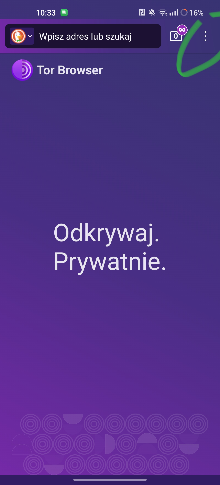
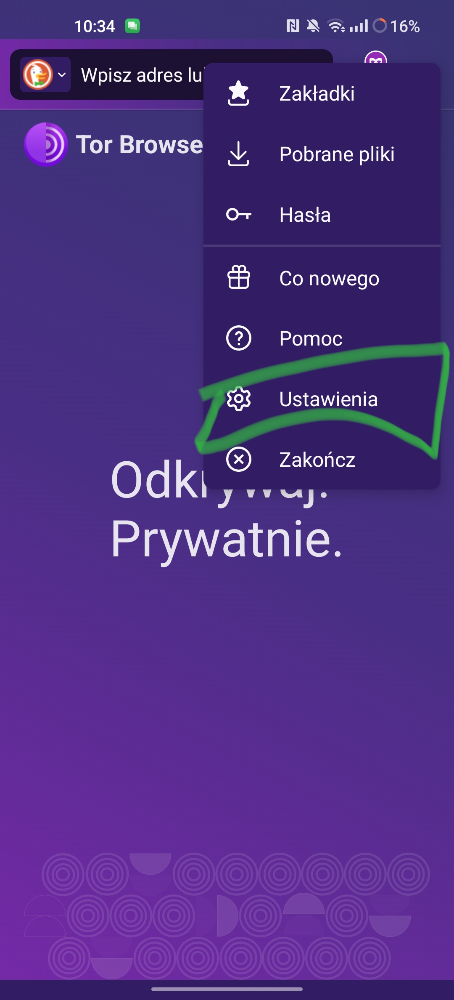
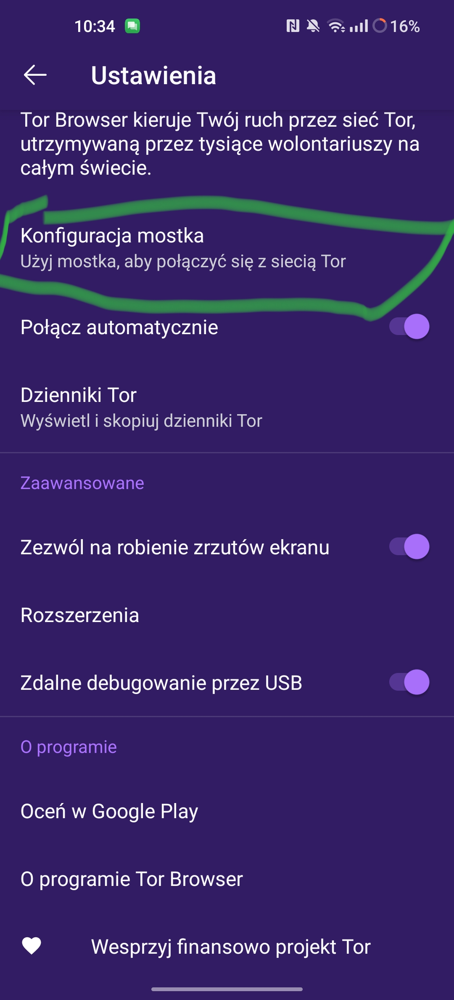

Wprowadzenie
Ludziom się wydaje, że darkweb to jest rzecz nielegalna.
A tak naprawdę jest legalny (prawie).
Blog Antek Edition
Ludziom się wydaje, że darkweb to jest rzecz nielegalna.
A tak naprawdę jest legalny (prawie).
Pobierz dla Android wyszukiwarkę: Kliknij tutaj
Rób to co na zdjęciach:




i uruchom wyszukiwarke darkwebu w google
Wejdź na Ahmia